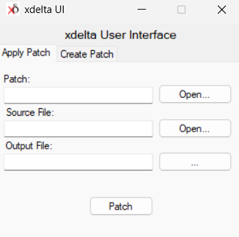

Como aplicar el parche?
Okei me di cuenta que esto puede estar muy complicado para personas que NO saben sobre esto, asi que les dare un tutorial!
⚠️ El uso indebido de esta guia queda a la resposabilidad total del usuario. ⚠️
Cosas que tienes que tener antes de comenzar a parchear:
- Una ROM del Tomodachi Collection en la version LIMPIA
Por obvias razones no les puedo decir en donde encontrarlo, pero con una busqueda rapida en google lo encontraran jiji - El parche descargado osea duhhh
※ Con rom limpia me refiero a una rom que no tenga ningun parche antes, por ejemplo, una rom que ya viene parcheada de una version inglesa no va a funcionar.
※ La version del parche depende de que version sea tu rom. (Release 3873 o Rev 1)
Para personas con un PC a mano:
PASO 1:
Descarga el parche y tambien descarga este programa (Xdelta UI) y descomprime el .rar
PASO 2:
Abre el programa, veras una pantalla algo asi:
PASO 3:
- En la parte que dice "Patch", tienes que buscar el archivo "Tomodachi ESP ???.xdelta"
- En la parte que dice "Source File", Debes poner la ROM del Tomodachi Collection.
- En la parte que dice "Output File", es la ROM parcheada, puedes ponerle el nombre que quieras,
pero recuerda que tiene que terminar en .nds
PASO 4:
Ponlo en tu emulador, una R4, tu DS, etc, y disfruta!
Para personas en celular o que no quieren descargar cosas raras:
!!! RECOMIENDO USAR ESTO !!!
PASO 1:
Entra a esta pagina veras una pantalla asi:

PASO 2:
- En la parte que dice "Source File", debes poner la rom del Tomodachi Collection.
- En la parte que dice "Patch", tienes que buscar el archivo "Tomodachi ESP ???.xdelta"
PASO 3:
Dale click al boton que dice "Apply Patch", despues se descargara la ROM parcheada.
PASO 4:
Ponlo en tu emulador, una R4, tu DS, etc, y disfruta!